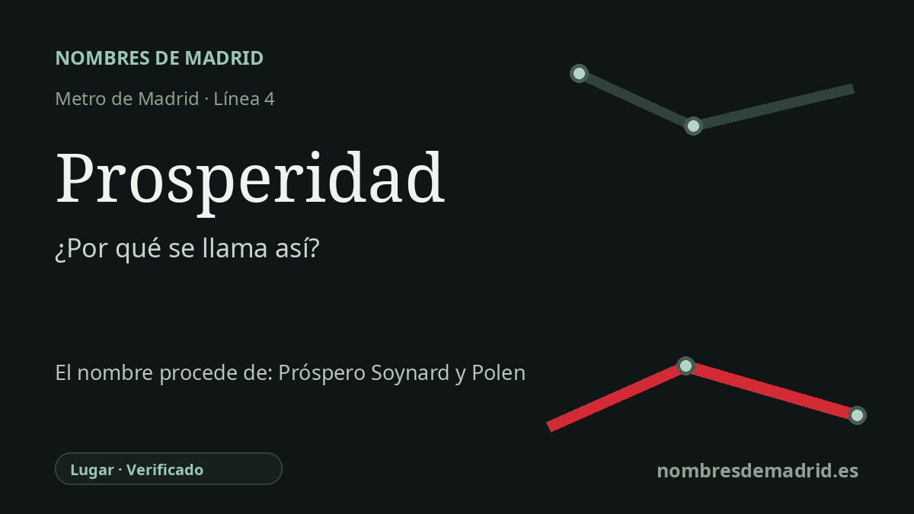

Publicado el · Investigación de Nombres de Madrid · Cómo verificamos cada origen · 6 fuentes consultadas
Respuesta rápida
La estación de Prosperidad toma su nombre de la plaza de la Prosperidad y del barrio de Chamartín que la rodea. El nombre del barrio está sólidamente vinculado a Próspero Soynard y Polen, propietario y promotor que empezó a vender pequeñas parcelas edificables allí en 1862.
La historia del nombre
La estación de Prosperidad toma su nombre de la plaza de la Prosperidad y del barrio homónimo de Chamartín. La relación con el transporte es directa: la ficha oficial del CRTM sitúa el acceso en la plaza de la Prosperidad, y la Comunidad de Madrid describe la ampliación de la línea 4 de 1973 como una obra destinada a cubrir la población del barrio de Prosperidad.
Detrás de ese topónimo está Próspero Soynard y Polen. Los estudios históricos lo identifican como uno de los primeros propietarios-promotores de esta periferia nororiental de Madrid, un hombre que compró terrenos agrícolas cerca del antiguo camino de Hortaleza y los dividió en pequeñas parcelas edificables. El nombre Prosperidad parece derivar de su nombre de pila, Próspero, más que de una promesa abstracta de riqueza o fortuna.
La fecha fundacional que se cita con más frecuencia es el 14 de diciembre de 1862, cuando Soynard vendió las primeras parcelas a Pedro Prado, albañil, y Gregorio Mayorga, carpintero. El lugar quedaba fuera del Ensanche proyectado, sobre suelo barato y mal dotado de servicios, donde obreros, jornaleros, artesanos e inmigrantes podían comprar lotes y levantar casas modestas. Por eso La Prosperidad nació con un carácter obrero y semirrural muy distinto del cercano barrio de Salamanca.
El barrio se integró después en la estructura urbana de Madrid. La investigación histórica local señala su incorporación al distrito de Buenavista en 1898, su paso a Chamartín en la reorganización municipal de 1955 y la división de 1987 que separó Ciudad Jardín del actual barrio de Prosperidad. La línea 4 llegó a la zona en marzo de 1973, cuando la ampliación Diego de León-Alfonso XIII añadió tres estaciones para este corredor en crecimiento.
La evidencia es sólida sobre el origen inmediato del nombre de la estación: la plaza y el barrio. La explicación más antigua que vincula La Prosperidad con Soynard también está bien respaldada por fuentes académicas e históricas locales, aunque el proceso exacto por el que el vecindario fijó el nombre parece menos una dedicación formal que un topónimo popular decimonónico consolidado con el uso.